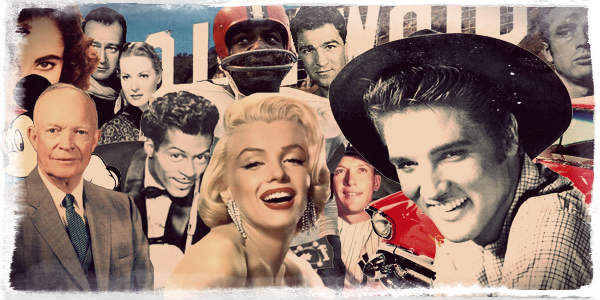
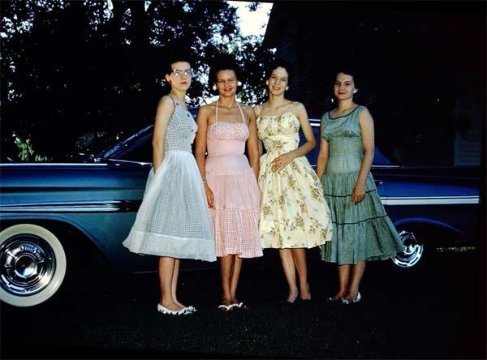
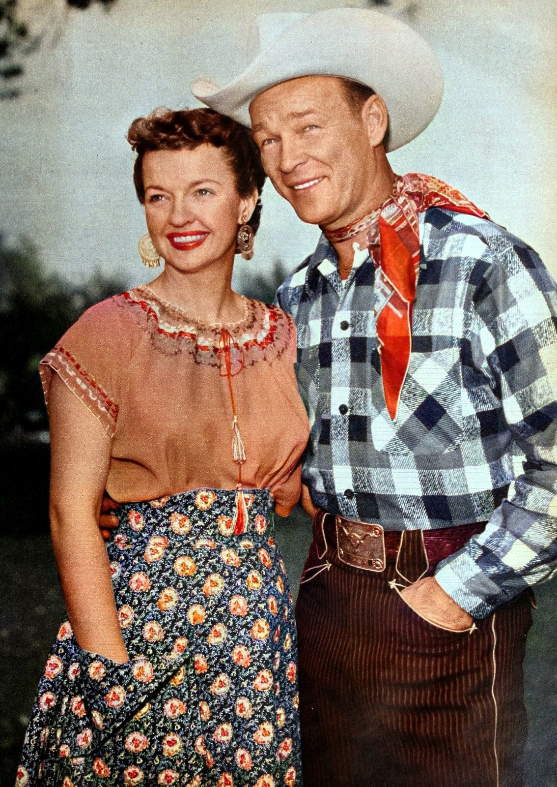
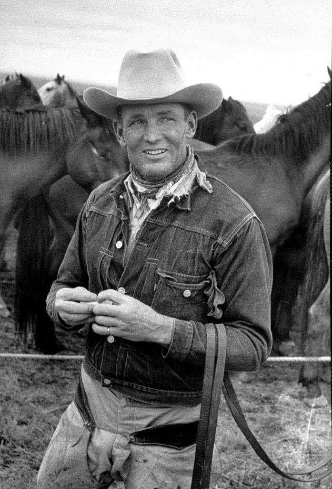
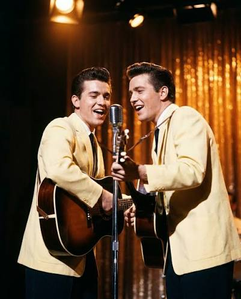

Stemningen for kvelden
Elvis, Marilyn Monroe, rock’n’roll og amerikansk glamour – dette er stemningen vi sikter mot. Hent inspirasjon fra film, musikk og mote fra epoken, og kjør på med sleket hår, røde lepper og en god dose sjarm.
Litt inspirasjon til antrekket til 1950-talls-kvelden på Rederiet. Tenk Elvis, Marilyn, rockabilly, diner og rock’n’roll – finn din egen vri!
← Tilbake til bryllupssidenIngen krav om å kunne sy sin egen petticoat – bruk bildene under som inspirasjon og lag din egen versjon av 50-tallsstilen.

Elvis, Marilyn Monroe, rock’n’roll og amerikansk glamour – dette er stemningen vi sikter mot. Hent inspirasjon fra film, musikk og mote fra epoken, og kjør på med sleket hår, røde lepper og en god dose sjarm.

For jentene: en fargerik kjole med stramt liv og vidt, svingete skjørt (gjerne med polkadotter eller blomster). Style med ballerinasko eller sandaler, cateye-briller og en enkel oppsatt frisyre.

Vil dere ha en westernvri sammen? Han i rutete skjorte, cowboyhatt og et skinnbelte med stor spenne. Hun i blomstrete skjørt og bluse, med staselige øredobber og gjerne et halstørkle som detalj.

Vil du holde det enkelt: dongerijakke, cowboyhatt og et skjørt halstørkle rundt halsen. Autentisk, hverdagslig og lett å style med det du allerede har.

For han som vil style seg som en rockabilly-artist: dressjakke i en lys pastellfarge over mørke bukser, og velfrisert hår med litt pomade. Gitar er valgfritt – stilen sitter uansett.